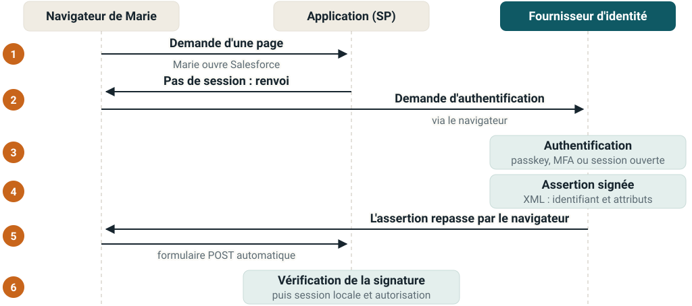
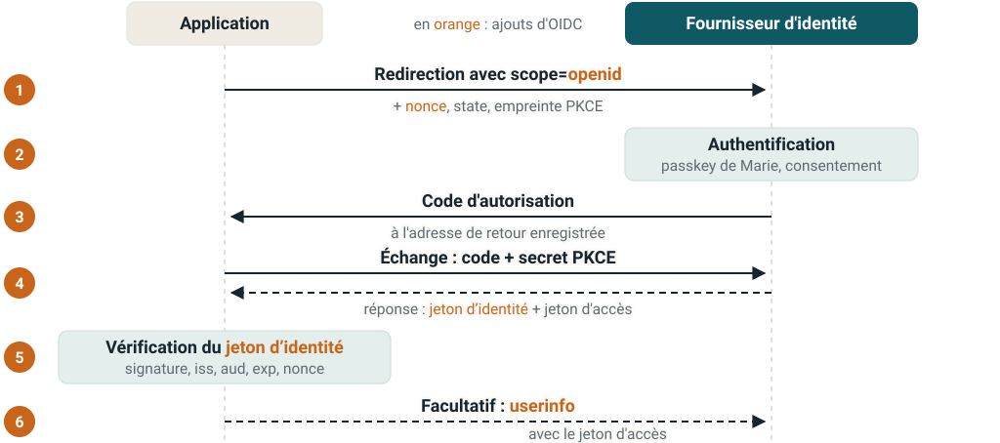
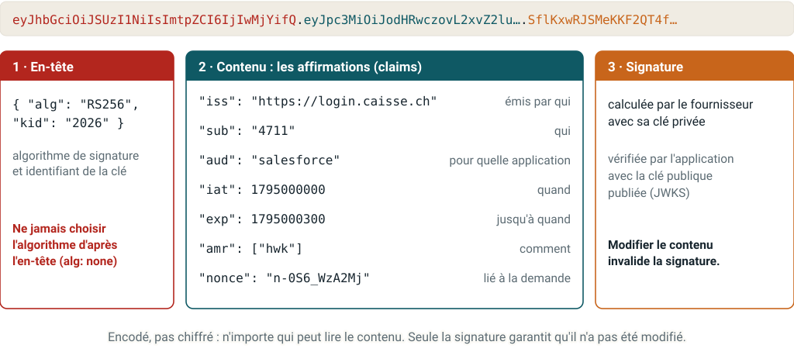
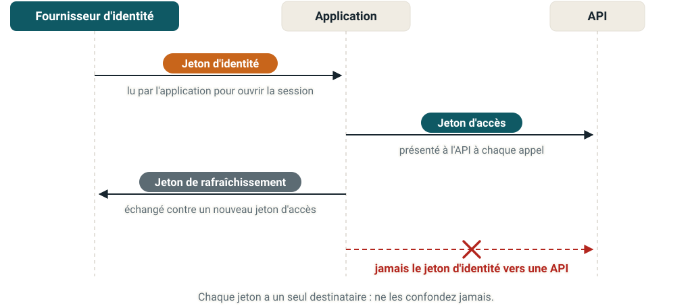

07
SAML 2.0, OAuth 2.0, OpenID Connect, SCIM
Fil rouge : Comment les applications font confiance à l’IdP, et comment les comptes de Marie y arrivent.
Protocoles
Variante : l’échange démarre depuis le portail d’entreprise (initié par l’IdP). Plus pratique, mais l’étape 2 disparaît, et avec elle le lien entre la demande et la réponse : c’est une surface d’attaque en plus.
Protocoles

Protocoles
Ce que contient l’assertion
Erreurs classiques d’intégration
Le certificat de signature de l’IdP a une date d’expiration. Le jour où il expire, toutes les applications fédérées tombent en même temps. Cette date doit être dans un agenda, pas seulement dans un fichier de configuration.
Protocoles
Ce qu’OAuth 2.0 fait
Ce qu’OAuth 2.0 ne fait pas
Formule à retenir : OAuth donne un ticket de consigne, pas une carte d’identité.
Protocoles
Ce que PKCE empêche : un attaquant qui intercepte le code ne peut rien en faire, car il ne connaît pas le secret d’origine. Le code seul devient inutilisable.
Protocoles
| Élément | Statut | Raison |
|---|---|---|
| Flux implicite (response_type=token) | À ne plus utiliser | Le jeton passe dans l’URL : historique, journaux du proxy |
| Mot de passe via l’application (ROPC) | À ne plus utiliser | L’application manipule le mot de passe : plus aucun intérêt |
| PKCE | Obligatoire | Pour tous les clients, plus seulement le mobile |
| Adresse de retour (redirect URI) | Comparaison exacte | Avec un joker, le code part chez l’attaquant |
| Jeton de rafraîchissement (client public) | Rotation obligatoire | Un jeton longue durée volé : accès durable et discret |
| Jeton dans l’URL | Interdit | Même problème que le flux implicite : fuite invisible |
OAuth 2.1 est encore un projet à l’IETF au moment de ce cours. Son intérêt est ailleurs : il liste noir sur blanc ce qu’il faut retirer d’une intégration existante.
Protocoles
1 Le jeton d’identité (ID token)
Un JWT signé qui décrit l’authentification : qui (sub), émis par qui (iss), pour quelle application (aud), quand (iat), jusqu’à quand (exp), comment (amr, acr), et avec quel code aléatoire (nonce).
C’est ce jeton, et lui seul, que l’application doit vérifier pour identifier l’utilisateur.
2 Le point d’information (userinfo)
Un service standard qui renvoie les attributs de l’utilisateur, regroupés par familles : profile, email, address, phone.
Fini les correspondances d’attributs à réinventer pour chaque application, qui étaient la plaie de SAML.
3 Découverte et clés publiques
Un document publié à une adresse convenue décrit tous les points d’accès du fournisseur ; un second expose ses clés publiques de signature.
L’intégration devient automatisable, et le changement des clés cesse d’être une opération manuelle à risque.
Règle : le jeton d’identité authentifie l’utilisateur auprès de l’application. Le jeton d’accès autorise l’application auprès d’une API. Ne jamais confondre les deux usages.
Protocoles

Protocoles

Protocoles

Protocoles
| Jeton | Destinataire | Rôle | Durée de vie |
|---|---|---|---|
| Jeton d’identité (ID token) | L’application cliente | Prouver qu’une authentification a eu lieu, et dans quel contexte | Très courte, usage unique à la connexion |
| Jeton d’accès (access token) | L’API | Autoriser des appels d’API dans les limites des droits accordés | Quelques minutes à une heure |
| Jeton de rafraîchissement (refresh token) | Le serveur d’autorisation | Obtenir un nouveau jeton d’accès sans se réauthentifier | Longue, d’où la nécessité de le renouveler |
Protocoles
Le problème
La règle des deux canaux
Synthèse
| Besoin | Protocole | Remarque |
|---|---|---|
| Connecter un logiciel d’entreprise à l’IdP | SAML 2.0 | Le plus largement pris en charge par les applications installées en entreprise |
| Authentifier sur une application web ou mobile | OpenID Connect | Plus léger, adapté au mobile et aux applications web modernes |
| Autoriser l’appel d’une API | OAuth 2.0 / 2.1 | Code d’autorisation avec PKCE. Jamais le flux implicite |
| Créer, modifier et désactiver des comptes | SCIM 2.0 | Indispensable en complément de la fédération, jamais à sa place |
| Authentifier une machine, sans utilisateur | OAuth client credentials | Avec un certificat plutôt qu’un secret partagé |
| SSO dans un domaine Windows | Kerberos | Ancien, efficace, limité au réseau interne et aux machines du domaine |
| Résister au phishing à la connexion | FIDO2 / WebAuthn | S’ajoute aux précédents : c’est le facteur, pas le protocole de fédération |
Protocoles
1 Détournement de l’adresse de retour
Une adresse de retour comparée approximativement livre le code d’autorisation à un domaine de l’attaquant.
Parade : comparaison exacte, sans joker.
2 L’intermédiaire trompé
Un service de confiance utilise ses propres droits pour le compte d’un tiers, sans vérifier au nom de qui il agit (confused deputy).
Parade : un jeton au nom de l’utilisateur, pas l’identité du service.
3 Phishing au consentement
Une application malveillante obtient le droit de lire les e-mails. Aucun mot de passe volé ; l’accès survit à son changement.
Parade : liste blanche d’applications, validation des droits sensibles.
4 Rejeu de jeton et de session
Un jeton ou un cookie volé est réutilisé depuis un autre appareil. L’authentification forte a déjà eu lieu.
Parade : jeton lié au client, durées courtes, réévaluation du contexte.
Point commun aux quatre : l’authentification était correcte. La faille est dans la délégation, c’est-à-dire dans l’autorisation. C’est ce qui la rend si difficile à détecter.